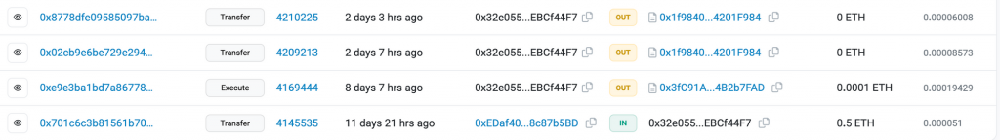
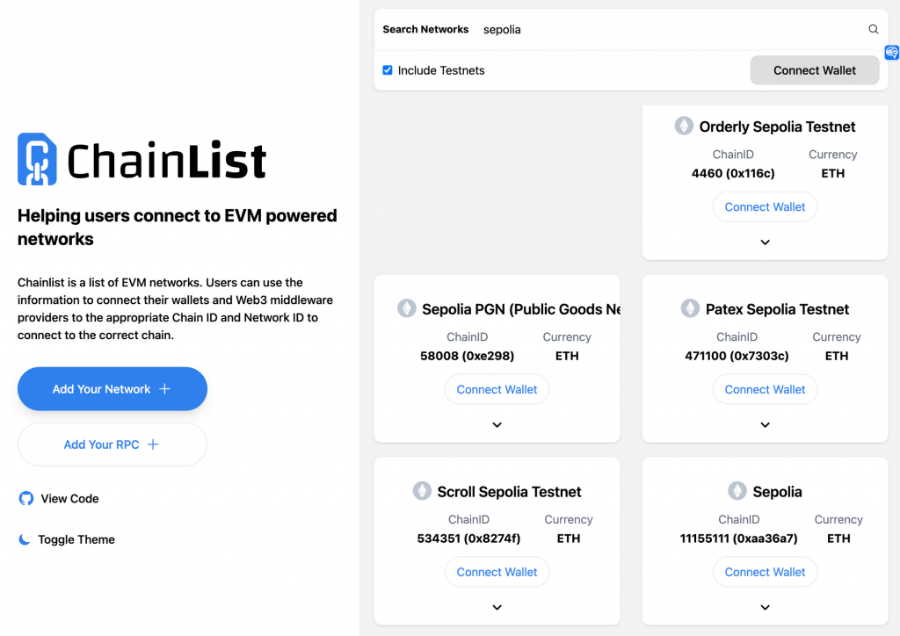
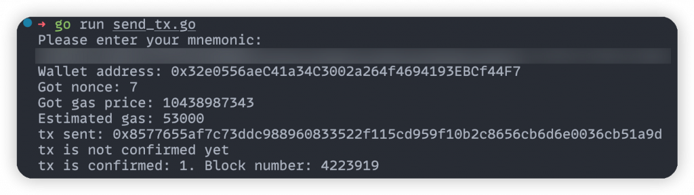

前一天我們完成在後端產生錢包註記詞、私鑰、讀取代幣餘額的實作，今天就會來實作簽名並發送交易的功能，才能完成在區塊鏈上的寫入，作為 Web3 與後端第一部分的結尾。為了產生完整的交易，除了 from address, to address, value 之外，還有像是 nonce, gas price, gas limit, chain ID 等等元素是不可或缺的，在前端的部分沒有講到是因為 wagmi 與 Metamask 已經幫我們處理好這些資料的計算，而在後端這些數值就需要自己算出來。
Nonce 的概念是對於一個固定的錢包地址來說，他發送的第一個交易 Nonce 就必須為 0，第二個 Nonce 為 1 以此類推，因此 Nonce 是嚴格遞增且不能被重複使用的。這個機制也是為了避免 replay attack。想像一下如果 A 簽名了一個轉移 1 ETH 給 B 的交易並廣播出去，如果這個交易的簽章還能重複使用的話，B 就能再廣播一次這個交易讓 A 多轉 1 ETH 給他。有的 Nonce 機制就可以確保 A 要送出的下一個交易的簽名一定跟之前交易的簽名不一樣（因為 Nonce 不一樣就會讓整個交易 hash 出來的結果不一樣）
以我的地址為例，如果拉到最早以前的交易紀錄，這四筆交易從下往上的 Nonce 分別是 200334, 0, 1, 2，最下面那筆的 Nonce 值很大因為這是水龍頭轉 ETH 給我的交易，代表這個水龍頭地址已經發出超過 20 萬筆交易。再來三筆是我做的前三個操作，因此 Nonce 分別是 0, 1, 2。

至於要怎麼從鏈上取得一個錢包地址的 Nonce 呢？可以使用 go-ethereum
中的 github.com/ethereum/go-ethereum/ethclient
來連到一個以太坊的 JSON RPC node，並透過 PendingNonceAt
function 來拿到下一筆交易應該要用什麼 Nonce。這裡的 JSON RPC
一樣使用前面註冊的 Alchemy 即可，並從環境變數載入
ALCHEMY_API_KEY 。
[code] // connect to json rpc node client, err := ethclient.Dial(“https://eth-sepolia.g.alchemy.com/v2/” + os.Getenv(“ALCHEMY_API_KEY”)) if err != nil { log.Fatal(err) }
// get nonce
nonce, err := client.PendingNonceAt(context.Background(), common.HexToAddress(account.Address.Hex()))
if err != nil {
log.Fatal(err)
}
fmt.Printf("Got nonce: %d\n", nonce)[/code]
在以太坊上執行任何交易、智能合約操作時，都需要支付一定的費用，這個費用被稱為 Gas Fee。在發送交易時，他是由 Gas Price 及 Gas 數量這兩個數值相乘算出來的。
在以太坊上進行任何操作時，這些操作其實是由底層的 EVM code 所組成，這是以太坊中類似組合語言的存在。而每個操作都有他對應的 Gas 數量作為這個操作的費用，例如 ADD 指令（加法）花費 3 個 gas、MUL 指令（乘法）花費 5 個 gas。而一筆交易中會執行到的所有指令的 Gas 總合就是這筆交易需花費的 Gas 數量。例如一筆簡單的轉帳交易需要的 Gas 數量通常是 21000，複雜的智能合約操作就需要更多的 Gas。
Gas Price 指的是你願意為每單位的 Gas 支付多少金額，通常以 Gwei
來表示（Wei 是 ETH 的最小單位也就是 10^-18 ETH，因此
10^9 Wei = 1 Gwei
，10^9 Gwei = 1 ETH）。交易指定的 Gas Price
越高，交易確認的速度通常也越快，因為礦工更願意優先確認這筆交易以獲得更高的獎勵。
因此在發送交易時我們需要指定 Gas Limit 跟 Gas Price，Gas Limit
指的就是這筆交易最多只能使用多少個 Gas
單位，因此這樣就能算出一筆交易最多會花多少手續費。例如假設進行一個 Swap
交易要花 80,000 個 Gas，而當下以太坊的 Gas Price 為 20
Gwei，那就可以計算出這筆交易的手續費會是
80000 * 20 * 10^-9 = 0.0016 ETH ，再乘上當下 ETH 的價格
1629 USD 就可以算出大約要花 2.61 USD 的手續費。
若設定的 Gas Limit 太低，交易可能因為沒有足夠的 Gas 而失敗，但還是需要支付已經消耗的 Gas 費用（交易會上鏈但在 Etherscan 上會顯示交易失敗，而且 Gas Fee 照扣）。若 Gas Price 設定的太高可能會花不必要的錢，但太低又可能會讓交易要等很久才上鏈，因此正確設定 Gas 的參數非常重要。
在 ethclient
物件中可以使用SuggestGasPrice方法來查詢當前的 Gas
Price，以及 EstimateGas 方法可以估算這筆交易大約會花多少
Gas，而有時為了確保交易成功會再基於這個值往上加一些 Gas。
[code] // get gas price gasPrice, err := client.SuggestGasPrice(context.Background()) if err != nil { log.Fatal(err) } fmt.Printf(“Got gas price: %d”, gasPrice)
// estimate gas
amountToSend := big.NewInt(1000000000000000) // 0.001 eth in wei
estimateGas, err := client.EstimateGas(context.Background(), ethereum.CallMsg{
From: common.HexToAddress(account.Address.Hex()),
To: nil,
Value: amountToSend,
Data: nil,
})
if err != nil {
log.Fatal(err)
}
fmt.Printf("Estimated gas: %d\n", estimateGas)[/code]
當我們說一條鏈是 EVM 相容時（例如以太坊主網、Sepolia 測試網、Polygon、Arbitrum 等鏈），代表像私鑰格式、地址、交易簽名方式、智能合約的程式碼等等執行層的機制都是跟以太坊幾乎一樣的（差異可能較多是在共識層也就是節點之間如何達成共識、挖礦機制等等），一個很大的好處是開發者可以在不同的鏈上都部署相同的智能合約，而不需要做任何修改，甚至部署的合約地址在各條 EVM 相容的鏈都可以一模一樣。
但為了確保交易的安全性（避免 replay attack），每條 EVM 相容的鏈需要有自己獨特的 Chain ID，才能用來在交易中區分不同的 EVM 鏈。而 Chain ID 的概念是在 EIP-155 中定義的，他讓交易的簽名計算中多包含了 Chain ID，這樣即使交易在以太坊主網上有效，它也不能被重放到其他鏈上，因為每個鏈的 Chain ID 都是獨特的。
chainlist 是一個知名的網站，上面列出了許多 EVM 相容的鏈，並提供了他們的節點 JSON-RPC 網址、Chain ID、區塊鏈瀏覽器（Explorer）連結等資訊。對於要新增 EVM 相容鏈到錢包 Extension 時是個很有用的工具。在裡面搜尋 Sepolia 並勾選 Include Testnets 就可以看到他對應的 Chain ID 是 11155111。

接下來是組出交易並用私鑰簽名的過程，以下先考慮最單純的送出 ETH 給另一個地址的交易，簽名過的交易可以被廣播到區塊鏈上，就會有礦工負責將其包入新的區塊做確認。因此程式碼中主要分成四步：
NewEIP155Signer
簽名交易[code] // create transaction tx := types.NewTransaction( nonce, common.HexToAddress(“0xE2Dc3214f7096a94077E71A3E218243E289F1067”), amountToSend, estimateGas, gasPrice, []byte{}, ) chainID := big.NewInt(11155111) signedTx, err := types.SignTx(tx, types.NewEIP155Signer(chainID), privateKey) if err != nil { log.Fatal(err) }
// broadcast transaction
err = client.SendTransaction(context.Background(), signedTx)
if err != nil {
log.Fatal(err)
}
fmt.Printf("tx sent: %s\n", signedTx.Hash().Hex())
// wait until transaction is confirmed
var receipt *types.Receipt
for {
receipt, err = client.TransactionReceipt(context.Background(), signedTx.Hash())
if err != nil {
fmt.Println("tx is not confirmed yet")
time.Sleep(5 * time.Second)
}
if receipt != nil {
break
}
}
// Status = 1 if transaction succeeded
fmt.Printf("tx is confirmed: %v. Block number: %v\n", receipt.Status, receipt.BlockNumber)[/code]
在用 types.NewTransaction 建立交易時，data
的欄位先給他空陣列，未來會再講到更複雜的交易要如何組出
data。有了這些程式碼後，再記得用 export ALCHEMY_API_KEY=xxx
來設定環境變數，以及加上註記詞的輸入機制來指定錢包，就可以成功發出交易了！

到 Sepolia Etherscan 上查看，可以確實看到這筆交易被包含在第 4223919 個區塊中： https://sepolia.etherscan.io/tx/0x8577655af7c73ddc988960833522f115cd959f10b2c8656cb6d6e0036cb51a9d
今天我們已經釐清發送一個交易到以太坊上所需知道的細節，計算出所有需要的值並成功發送交易、等待上鏈，完整的程式碼在這裡。第一部分後端與 Web3 的介紹就先告一段落，未來的內容會再介紹要如何發出更複雜的交易。明天開始會進入到 Web3 與 App 端的開發相關技術，也預告一下會介紹 EVM 以外的鏈如何產生錢包與簽名，畢竟除了 EVM 鏈以外還是有很多常用的鏈。